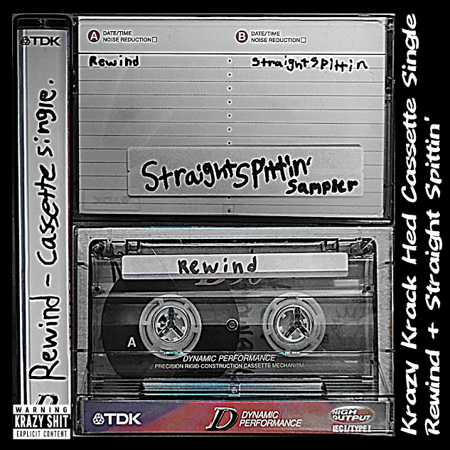

Krack Hed

| Artist | Krazy Krack Hed |
|---|---|
| Type | Single |
| Released | September 12th 2026 |
| Label | Krazy Records |
| Genre | Hip-Hop Rap / Gangsta-Rap |
| Formats | Digital / Cassette Tape (CD) |
| # | Title |
|---|---|
| 1 | Rewind |
| 2 | Straight Spittin' |
| Current Status | Released |
|---|---|
| Digital | ✔ Available |
| Compact Disc (CD) | ✘ Not Released |
| Cassette | ✔ Available |
| Vinyl | ✘ Not Released |
Originally created completely from the ground up by Tha Krazy Krack Hed, Rewind • Cassette Single started out as a small, one-off physical release. After someone expressed interest in hearing the tracks, Krazy personally put together a single cassette tape and sold it for $10. The listener enjoyed the music, which led to Krazy making the release available online to see what the rest of the audience thought. Both tracks explore a different sound and direction for Krack Hed, blending techno-inspired G-funk elements with fast-paced, old-school gangsta-rap and hip-hop flows. This single gives listeners a chance to hear Krazy experiment with a new style while keeping his own lyrical approach.